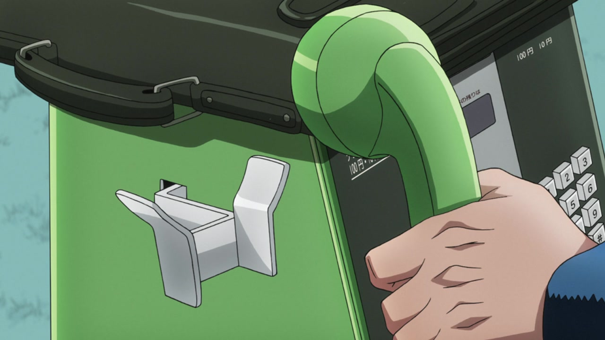
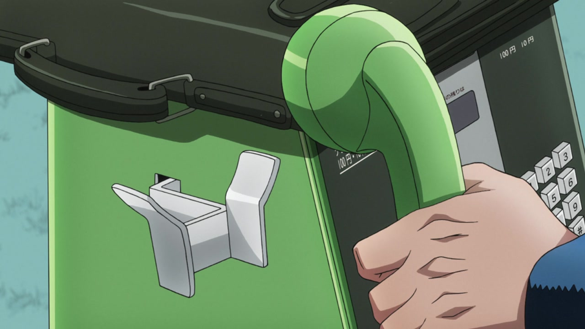

Hello everybody, and welcome back! Today we’re gonna take a look at another underwhelming set of differences. Are you ready to be let down? Let’s go!
- In this scene, they recoloured the bag and the hand (as commenter Patrick Falcon pointed out, this is in fact a palette swap from Josuke’s to Okuyasu’s! Good catch there!):
 

- And in these next scene, the transition lines have been made brighter (as it’s usually the case):
- Here, the colours are slightly brighter:
- Here, in the BDs they added a black and a white frame in between each transition:
- And this last animation of Yukako being bounced has been recentered:
And that’s it for Episode #09 too. Man, the third Bluray was really underwhelming! I’m pretty sure RHCP Part 1 has had a more substantial makeover though, so tune in next time for Tonio’s spicy meatballs (which will probably be as uneventful as this analysis was) and then we’ll hopefully see some major changes in the episode after that.
See you then!